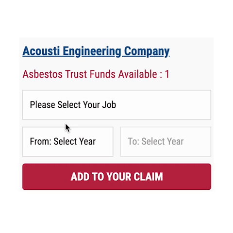

Search results for Miami, FL asbestos exposure and available compensation
resources: 102 verified job sites with asbestos exposure, 538 boiler sites,
and 18 trust funds committed to compensating those diagnosed with
mesothelioma, lung cancer, and other asbestos-related diseases.
The compensation amounts from filed asbestos claims of the 18 available
trust funds in Miami, FL, are detailed in the tables below. These payouts
are obtained from the most recent scheduled values and adjusted according to
the relevant ratios*.
For example: If you have only worked in Miami, FL area and during
your employment(s), you utilized at least one product from each company that
reorganized into these 18 trust funds, you might be eligible for
compensation based on your diagnosis.
Miami, FL Mesothelioma Claims
Claim Type
Expedited Review
Individual Review
Applied Ratio
$2,098,134
$2,549,594
Miami, FL Lung Cancer Claims
Claim Type
Expedited Review
Individual Review
Applied Ratio
$2,098,134
$2,549,594
Miami, FL Severe Asbestosis Claims
Claim Type
Expedited Review
Individual Review
Applied Ratio
$2,098,134
$2,549,594
Miami, FL Other Cancers Claims
Claim Type
Expedited Review
Individual Review
Applied Ratio
$2,098,134
$2,549,594
* The trust funds ensure a fixed percentage of
compensation known as a "ratio," which reserves funds for potential future
victims based on the claim's worth.
Add Miami, FL Job-Sites to Your Claim
How to add jobs to the Asbestos Claim Value calculator
Select job-type that you performed
Select time frame of your employment
Click on “Add To Your Claim” button
Note: Add as many jobs as you recall to your claim calculator. If
you've worked in another state, use the
search bar at the top of the page, select city, and follow
the same steps.

Search Miami, FL Asbestos Job Sites by “First Letter”
A
B
C
D
E
F
G
H
I
J
K
L
M
N
O
P
Q
R
S
T
U
V
W
X
Y
Z
Nearby Cities (20 miles radius) with Verified asbestos exposure:
If you previously worked in boiler-related jobs and have been diagnosed with
mesothelioma, you can increase your compensation by including Miami, FL,
Boiler Locations in your claims.
Receive Top-Tier Free Legal Consultation from The Leading Asbestos Attorneys
in the U. S.
If you have legal questions about mesothelioma or other asbestos-related
diseases, fill out the "I have a legal question" form. You'll be
connected directly with qualified mesothelioma lawyers with decades of
experience. Take advantage of a 100% free legal consultation today.
We have selected top-notch asbestos lawyers who offer free legal
consultation for mesothelioma victims in Miami, FL. Our ultimate goal is
to create a bridge between asbestos victims and the organizations that
can help.
Today 08/21/2023 your free consultation will be offered by: